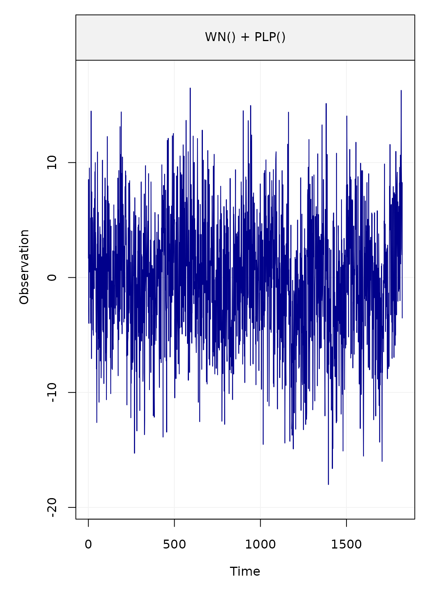

Generate data from a model
simulate_data.Rmd
phase = 0.45
amplitude = 2.5
sigma2_wn = 15
sigma2_powerlaw = 10
d = 0.4
bias = 0
trend = 5/365.25
cosU = amplitude*cos(phase)
sinU = amplitude*sin(phase)Let us consider a period of 5 year with daily observations:
n = 5*365Using functions implemented in simts, we generate
realizations from the sum of a White noise and PowerLaw process.
Note that the functions that enable to generate stochastic models
that include Power Law process, Matèrn process or Fractional Gaussian
noise are (for now) only available from the development version of the
package simts that can be easily installed with:
install.packages("devtools")
devtools::install_github("SMAC-Group/simts")
# define time at which there are jumps
jump_vec = c(600, 1200)
jump_height = c(20, 30)
# define myseed
myseed=123We generate residuals from the stochastic model
# generate residuals
eps = simts::gen_gts(model = model_i, n= n)Using function create_A_matrix(), we encode the
intercept, a deterministic vector (trend) and sinusoidal signals in a
matrix \(\boldsymbol{A}\) in order to
compute the deterministic component of the signal in a linear fashion.
Similarly, we define the vector of fixed coefficients denoted by \(\boldsymbol{x}_0\) in the paper.
# add trend and sin
A = gmwmx::create_A_matrix(t_nogap = 1:length(eps), n_seasonal = 1, jumps = NULL)
# define beta
x_0 = c(bias, trend, cosU, sinU)
# create time series
deterministic_signal = A %*% x_0We can graphically represent the functional and stochastic component of the model as follows
plot(deterministic_signal, type="l")
plot(eps)
We can add location shifts (jumps) in the signal as such:
# add trend, gaps and sin
A = gmwmx::create_A_matrix(t_nogap = 1:length(eps), n_seasonal = 1, jumps = jump_vec)
# define beta
x_0 = c(bias, trend, cosU, sinU, jump_height)
# create time series
deterministic_signal = A %*% x_0
plot(deterministic_signal, type="l")
plot(eps)We can then define and plot the generated time series
yy = deterministic_signal + eps
plot(yy)
We define a gnssts object.
# save signal in temp
gnssts_obj = create.gnssts(t = 1:length(yy), y = yy, jumps = jump_vec)
class(gnssts_obj)
#> [1] "gnssts"We can save a gnssts object as a .mom file
with the function write.gnssts()
write.gnssts(gnssts_obj, filename = "simulated_data.mom")The saved .mom file will have the following
structure:
# sampling period 1.000000
# offset 100.000000
# offset 200.000000
1 9.89397119231205
2 8.52434609242207
3 9.32563441388655
4 13.4598690226589
5 8.21468271071893
6 -1.62924569468478
7 17.8036063408026
8 7.13794134326489
9 5.34700832531847
fit_gmwmx = gmwmx::estimate_gmwmx(x = gnssts_obj,
model_string = "wn+powerlaw",
n_seasonal = 1,
theta_0 = c(0.1, 0.1, 0.1),
k_iter = 1)
fit_gmwmx
#> GNSS time series model
#>
#> * Model: wn + powerlaw
#>
#> * Functional parameters:
#> bias : +0.778520
#> trend : +0.015804
#> A*cos(U) : +2.366464
#> A*sin(U) : +1.958204
#> jump : +20.061620
#> jump : +30.596085
#>
#> * Stochastic parameters:
#> wn_sigma2 : +11.80775096
#> powerlaw_sigma2 : +11.93347935
#> powerlaw_d : +0.34017417
#>
#> * Estimation time: 0.21 s
plot(fit_gmwmx)
fit_gmwmx_2 = gmwmx::estimate_gmwmx(x = gnssts_obj,
model_string = "wn+powerlaw",
n_seasonal = 1,
theta_0 = c(0.1, 0.1, 0.1),
k_iter = 2)
fit_gmwmx_2
#> GNSS time series model
#>
#> * Model: wn + powerlaw
#>
#> * Functional parameters:
#> bias : +0.891683
#> trend : +0.016483
#> A*cos(U) : +2.438139
#> A*sin(U) : +2.043069
#> jump : +19.550541
#> jump : +30.869573
#>
#> * Stochastic parameters:
#> wn_sigma2 : +11.96947053
#> powerlaw_sigma2 : +11.75061286
#> powerlaw_d : +0.34298983
#>
#> * Estimation time: 0.53 s
plot(fit_gmwmx_2)
fit_mle_hector = gmwmx::estimate_hector(x = gnssts_obj,
model_string = "wn+powerlaw",
n_seasonal = 1
)
fit_mle_hector
#> GNSS time series model
#>
#> * Model: wn + powerlaw
#>
#> * Functional parameters:
#> bias : -0.889000 +/- 1.5900000000
#> trend : +0.015639 +/- 0.0019873265
#> A*cos(U) : +2.542700 +/- 0.4870740000
#> A*sin(U) : +0.966218 +/- 0.4826000000
#> jump : +18.008400 +/- 1.5199300000
#> jump : +30.626100 +/- 1.5310600000
#>
#> * Stochastic parameters:
#> wn_sigma2 : +9.10561714
#> powerlaw_sigma2 : +17.73165228
#> powerlaw_d : +0.29703100
#>
#> * Estimation time: 20.17 s
plot(fit_mle_hector)